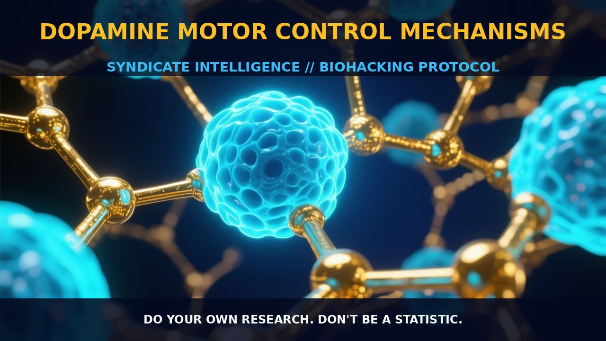

Dopamine Motor Control Mechanisms

1. The Mechanism
Dopamine, a critical neurotransmitter, plays a pivotal role in motor control and other functions. Synthesized from the amino acid tyrosine, dopamine undergoes a multi-step process involving enzymes such as tyrosine hydroxylase, which converts tyrosine to L-DOPA, and aromatic L-amino acid decarboxylase, which then converts L-DOPA to dopamine. The dopaminergic system primarily includes the nigrostriatal pathway, heavily involved in motor control, and the mesolimbic pathway, associated with reward and motivation.
Dopamine receptors, particularly D1 and D2, are distributed throughout the brain, with D1 receptors more abundant in the prefrontal cortex and D2 receptors more prevalent in the striatum. The striatum, a key component of the basal ganglia, regulates and coordinates voluntary movements. The dopaminergic system interacts with other neurotransmitter systems, such as acetylcholine, GABA, and glutamate, forming a complex network that modulates motor function.
The nigrostriatal pathway, originating from the substantia nigra, projects to the striatum, critical for the regulation of motor behavior. Dopamine in this pathway modulates the activity of GABAergic and glutamatergic neurons in the striatum, influencing the balance between excitation and inhibition. This balance is essential for the smooth execution of motor tasks. Additionally, dopamine influences the basal ganglia, regulating the direct and indirect pathways responsible for facilitating and inhibiting motor output.
2. Biological Leverage
Understanding the biological leverage of dopamine in motor control provides insights into how enhancing or modulating dopamine levels can influence motor functions. The prefrontal cortex, a key area involved in executive functions and decision-making, is heavily influenced by dopamine. Dopamine in the prefrontal cortex regulates attention, working memory, and the integration of sensory information, critical for motor control. The prefrontal cortex interacts with the motor cortex, responsible for the execution of voluntary movements, through intricate neural pathways.
Dopamine facilitates the communication between these regions, enhancing the precision and efficiency of motor actions. In the basal ganglia, dopamine modulates the activity of GABAergic and glutamatergic neurons, creating a dynamic balance between excitation and inhibition. This modulation is crucial for the proper functioning of the direct and indirect pathways, integral to the control and coordination of voluntary movements. The direct pathway, enriched with D1 receptors, facilitates motor output by activating GABAergic neurons, while the indirect pathway, rich in D2 receptors, inhibits motor output by activating glutamatergic neurons.
Dopamine also influences the limbic system, interconnected with the prefrontal cortex and the motor cortex. The limbic system, particularly the amygdala and hippocampus, plays a role in emotional and cognitive processing, affecting motor control. Enhanced dopamine levels can improve the emotional and cognitive state, thereby enhancing overall motor performance. For instance, dopamine enhances the activity of the prefrontal cortex, improving decision-making and planning, crucial for executing complex motor tasks.
3. Tactical Implementation
To effectively implement dopamine modulation for enhancing motor control, it is crucial to consider the timing and dosage of interventions. Tyrosine and phenylalanine, precursors to dopamine, can be taken in low-to-moderate amounts to support dopamine synthesis. These amino acids are generally well-tolerated and can be supplemented orally, with typical doses ranging from 500 to 1500 mg per day. Tyrosine supplementation can help maintain stable dopamine levels, particularly under stress, when dopamine synthesis may be impaired. Supporting the enzyme tyrosine hydroxylase can enhance dopamine synthesis.
Stacking tyrosine with other precursors such as L-theanine or B-vitamins can further enhance dopamine synthesis. L-theanine, found in green tea, can increase dopamine levels by enhancing the activity of tyrosine hydroxylase. B-vitamins, particularly B6, B12, and folic acid, are cofactors for enzymes involved in dopamine synthesis and metabolism. Taking a balanced B-complex supplement can support optimal dopamine production. Timing of supplementation is also critical; taking these supplements in the morning can enhance wakefulness and motor function, while evening supplementation can support sleep and relaxation.
Engaging in activities that naturally increase dopamine levels, such as physical exercise, can enhance the function of the prefrontal cortex and basal ganglia. Regular aerobic exercise can boost dopamine levels and improve motor control. Cognitive exercises, such as working memory tasks, can also increase the number of dopamine receptors in the prefrontal cortex and temporal lobe, enhancing motor function and cognitive performance.
Prostar Life Hack
To enhance dopamine-mediated motor control, supplement with tyrosine and phenylalanine, and stack with L-theanine and B-vitamins. Engage in regular aerobic exercise and cognitive tasks to boost dopamine levels and improve motor function.
[ AUTHOR: LEAD TECHNICAL RESEARCHER ]